INTRODUCTION
The climate control system makes it possible to alter the features of the air introduced into the passenger compartment (temperature, humidity) designed to create and maintain a high level of comfort whilst driving.
Climate control system components
The climate control system components are illustrated in the figure.
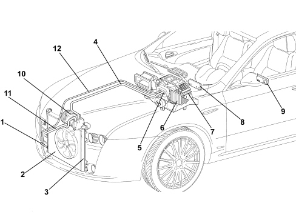
1. Linear pressure switch
2. Condenser
3. Drier filter built into the condenser
4. Low pressure gas pipe
5. Expansion valve
6. Evaporator
7. Duct/distributor assembly
8. Control panel with electronic control unit
9. Rear control panel (triple zone version)
10. Compressor
11. High pressure gas pipe
12. High pressure fluid pipe
Operating principle
The aim of refrigeration equipment is to absorb heat from an environment. In order to do this an air conditioner has recourse to certain fluids (known as refrigerants) capable of cooling down (lowering their temperature) and changing state (from liquid to gas) when they are subject to a large drop in pressure, thus expanding. They are therefore capable of absorbing heat from their environment. When the temperature increases, thereby also increasing the pressure, they change state again, from gas to liquid, and condense.
The first problem is therefore to liquefy this gas, which can be achieved simply by bringing it to a temperature below that of evaporation (or boiling) which, as has already been stated, is -26°C at atmospheric pressure for R134a.
In order for this to be achieved at ambient temperature which, in our case, may be rather high (in the engine compartment), it is necessary to increase the evaporation point of the gas so that it remains liquid until the moment it is made to expand, in order to produce the desired refrigerant effect.
To raise the boiling point of the gas its pressure must be increased, at the same time, decreasing the temperature.
In order for this to take place the system requires a certain amount of power. This power, supplied by the compressor, is subtracted from the power produced by the engine.
The operating principle of the refrigerant cycle phases in the air conditioning system for a motor vehicle can be summed up as follows.
The gaseous R134a refrigerant is drawn in by the compressor at a pressure of between 0.5 and 2 bar and is compressed at a value of between 10 and 17 bar. Boiling point becomes around 60 °C at these pressures.
This fluid, heated by the compression stage at 80 - 100°C, always in a gaseous state, in the compressor where, through the effect of the cooling air flow (produced by the vehicle moving forward or through the action of the fan) that passes through it, reaches condensation point, changing at high pressure to a liquid state.
Later on the refrigerant passes through a filter which has three functions: to trap the impurities, to absorb the dampness contained in the circuit and to work as a reserve reservoir for the actual refrigerant.
The refrigerant therefore reaches the expansion valve which introduces it into the evaporator where the pressure is around 1.5 atm. (1.52 bar). At this pressure the liquid/vapour system saturated with the refrigerant fluid is in equilibrium at a temperature of about -7 °C. At the same time, the air that passes through the evaporator (through the action of a fan), being at a considerably higher temperature than the refrigerant fluid it contains, causes it to boil and evaporate completely by imparting heat. When it cools down, the air deposits some of the humidity it contains on the evaporator fins in the form of droplets which are collected in a chamber and drained outside the vehicle.
The air, cooled and dehumidified in this way, is sent inside the vehicle. The refrigerant at the evaporator outlet is drawn in again by the compressor giving rise to a new cycle.
The route of the refrigerant fluid can be summarized as follows:
- In the compressor, the fluid coming from the evaporator is gaseous (temperature -5, -7°C, pressure 0.5 - 2 bar). Compression phase: the gaseous fluid is heated (temperature 80 - 100 °C, pressure 10 - 17 bar).
- Condenser - Compression phase: the fluid transmits heat to the outside, cools and returns to a liquid state (temperature 40 - 60°C, pressure 10 - 17 bar).
- Thermostatic expansion valve - Expansion phase - the fluid loses pressure (0.5 - 2 bar, possibly even 3 bar) becomes a gas + liquid mixture; the temperature is low, typical of air conditioning.
- Evaporator - Evaporation phase: the fluid becomes completely gaseous because the hot air driven by the fan is at a higher temperature than the refrigerant fluid and causes it to boil and evaporate completely, giving off heat. The temperature is low, that of air conditioning (pressure 0.5 - 2 bar).
Types of system
This vehicle is available with different climate control systems for the passenger compartment:
- manual climate control
- dual zone automatic climate control
- triple zone automatic climate control
Manual climate control: the user sets the air temperature, distribution and flow rate and they remain like that until they are altered by the user later on.
Automatic climate control (dual/triple zone): the user can set the parameters and select automatic system management. If they so wish, the user can retain the facility to manage the system manually.
In addition, the automatic climate control system on this vehicle is the dual zone type (driver's zone and front passenger zone) or triple zone (driver's zone, front passenger zone and rear seat zone), in other words the system has dual controls for the driver and the passenger and is capable of managing the settings for the two users separately, varying the air temperature and distribution parameters (the flow rate cannot be different in the zones) with a certain degree of independence.
MANUAL CLIMATE CONTROL
The manual climate control system control panel is illustrated in the diagram below
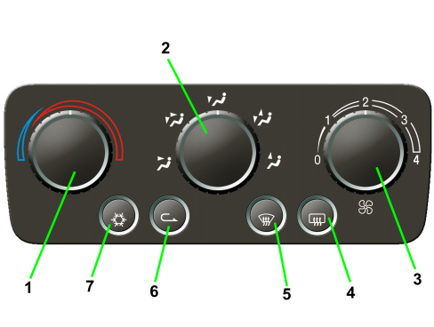
1. Air temperature regulation knob
2. Passenger compartment air distribution selection knob
3. Fan speed selection knob
4. Engagement/disengagement button for heated rear window and demisting of door mirrors
5. Engagement/ disengagement button for “MAX DEF” function (windscreen, front windows and door mirrors defrosting/demisting)
6. Engagement/disengagement button for internal air recirculation
7. Engagement/disengagement button for air conditioning compressor
The manually operated climate control system is managed by an electronic control unit, known as the "Climate Control System Node" (NCL) connected to the car electrical system B-CAN and incorporated in the climate control system control panel in the middle of the dashboard.
The control unit pin out is summarised in the table below.
|
Pin |
Signal |
|
1 |
earth |
|
2 |
direct power supply (from F39) |
|
3 |
n.c. |
|
4 |
n.c. |
|
5 |
n.c. |
|
6 |
n.c. |
|
7 |
n.c. |
|
8 |
additional heater control signal PTC1 |
|
9 |
additional heater control signal PTC2 |
|
10 |
fan relay switch feed |
|
11 |
compressor engagement positive (output) signal |
|
12 |
B-CAN A line |
|
13 |
B-CAN B line |
|
14 |
recirculation actuator control |
|
15 |
recirculation actuator control |
|
16 |
recirculation actuator control |
|
17 |
recirculation actuator control |
|
18 |
n.c. |
|
19 |
distribution actuator control |
|
20 |
distribution actuator control |
|
21 |
distribution actuator control |
|
22 |
distribution actuator control |
|
23 |
mixing actuator control |
|
24 |
mixing actuator control |
|
25 |
mixing actuator control |
|
26 |
mixing actuator control |
Operating logic
The maual air conditioner allows the use to manage the temperature and intake of air into the passenger compartment using the knobs and control buttons.
The following parameters/functions can be altered manually:
- Temperature
- Distribution in 5 positions
- Fan speed.
- Compressor enablement
- Defrosting/demisting function
- Recirculation
Electric motors transmit the air mixing, distribution and recirculation commands from the relevant knobs to the climate control casing.
The compressor can only be activated if a fan speed is set.
AUTOMATIC CLIMATE CONTROL
Automatic climate control system is managed by a control unit with a highly sophisticated operating strategy that can control the internal temperature of the two/three passenger compartment areas by heating or cooling the air to achieve the desired comfort.
The climate control system automatically regulates the following parameters/ functions:
- Air temperature at the driver's/passenger side vents
- Fan speed (continuous variation)
- Driver/passenger side air distribution
- Engagement of compressor
- Recirculation
Commands
The user interface for this control unit is laid out as follows.
Front dual-/triple-zone controls
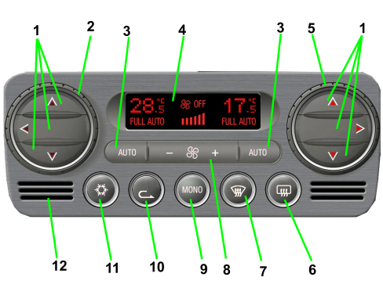
1. Air distribution selection buttons (driver and passenger sides)
2. Driver side temperature adjustment knob
3. AUTO function activation button (automatic operation)
4. Climate control system information display
5. Passenger side temperature adjustment knob
6. Heated rear window engagement/disengagement button
7. Activation button for MAXDEF function (fast front windows, heated rear window and door mirrors defrosting/demisting)
8. Fan speed increase/decrease buttons
9. Activation button for MONO function (alignment of set temperatures)
10. Engagement/disengagement button for internal air recirculation
11. Climate control compressor on / off button
12. Internal air temperature sensor
Rear triple zone controls
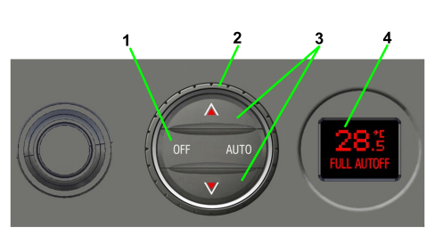
1. AUTO function activation button (automatic operation) and shut off of air flow to rear seats
2. Rear temperature adjustment knob
3. Air distribution selection buttons
4. Rear temperature display
The following parameters/functions can be set/adjusted manually:
- Desired temperature
- Fan speed
- Distribution in 7 positions
- Compressor enabling/disabling
- Defrosting/demisting function
- Recirculation
- Single zone function
Manual selections always take priority over automatic ones, except those related to the safety of the vehicle, and are stored until the user switches back to automatic operation.
The manual setting of a function does not jeopardise other automatic functions. In particular, the temperature control is always automatic when the system is operating, excluding situations in which manual selections affect the ability to control/maintain the required temperature. In this case, the temperatures shown on the display flash to indicate that the temperature is no longer being controlled by the automatic system.
Each time the system is turned on (Key-On), it returns to the conditions saved upon deactivation, except for the MAX DEF function, which is zeroed.
There is a facility for switching the system off manually (OFF) using the fan button until 0 bars are selected for the flow rate, completely deactivating the air conditioning system (except for Recirculation and Heated Rear Window) and isolating the passenger compartment from the outside environment.
The MAX-DEF function allows you to group together the actions that rapidly demist the windscreen, side windows, heated rear window and door mirrors.
Climate control system control unit
The climate control system is managed automatically by an electronic control unit known as the Climate Control Node (NCL) which maintains the air climate control conditions set and, therefore, desired by the user (or users).
The NCL is connected to the vehicle's electrical system B-CAN.
The NCL is incorporated in the climate control system control panel fitted in the centre of the dashboard. The rear view of the control unit is shown in the diagram with the connection to the electrical system highlighted and the connector pin out listed below.
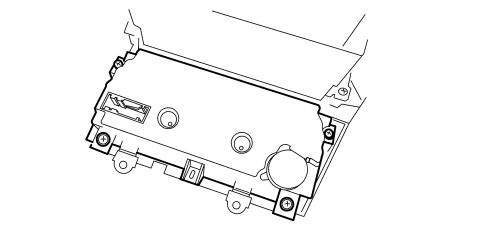
|
Pin |
Signal |
|
1 |
earth |
|
2 |
direct power supply (from F39) |
|
3 |
actuator positive power supply |
|
4 |
fan adjuster positive power supply |
|
5 |
earth for evaporation sensor |
|
6 |
solar sensor power supply |
|
7 |
additional heater control signal PTC1 |
|
8 |
actuator BUS communication line |
|
9 |
additional heater control signal PTC2 |
|
10 |
B-CAN A line |
|
11 |
B-CAN B line |
|
12 |
n.c. |
|
13 |
signal from evaporator sensor |
|
14 |
n.c. |
|
15 |
compressor engagement positive (output) signal |
|
16 |
compressor control signal (only with externally controlled compressor) |
|
17 |
fan regulator PWM control signal |
|
18 |
n.c. |
|
19 |
signal from pollution sensor |
|
20 |
signal from demisting sensor |
|
21 |
n.c. |
|
22 |
left solar sensor signal |
|
23 |
n.c. |
|
24 |
right solar sensor signal |
|
25 |
n.c. |
|
26 |
fan regulator feedback signal |

|
Some of the CAN nodes, including the climate control system control unit, are programmed with default settings that the customer will find when purchasing the car. If the control unit is being replaced, the Parts Dept. will send a blank component: once fitted, the data memorised in the Body Computer must be transferred to it by carrying out the PROXY ALIGNMENT procedure using the Examiner. |
|
|
The various actuators in the climate control system unit, even if similar, are specifically programmed and are not interchangeable. |
Operating logic
The principle on which is based the temperature control is linked to the 'EQUIVALENT TEMPERATURE' concept.
A control based on the equivalent temperature concept attempts to maintain the user's constant sensation of heat rather than maintaining a constant temperature in the passenger compartment.
The thermal sensation depends on all the thermal energy exchanges with the environment and is evaluated by the climate control system control unit on the basis of ambient parameters.
In particular, inside a VEHICLE, it depends on the following parameters:
- Average temperature in the passenger compartment
- Temperature of the air sent to the passenger compartment interior
- Temperature of the walls and surfaces exposed to passengers (dashboard, seats, etc.)
- Air flow rate in the passenger compartment
- Solar radiation
Solar radiation is measured by a sensor with a bilateral signal (LH-RH) that helps to determine the comfort conditions in terms of air temperature and distribution.
The only action that the user must take is to identify and select the equivalent temperature value that they desire. The system will work to regulate all control variables, independent of external conditions, to ensure the required sensation of heat.
The system automatically regulates the following parameters/functions:
- air temperature at the vents
- air distribution
- air flow rate in the passenger compartment
- compressor enablement
- recirculation
All of these functions can be manually changed. In other words, the user can intervene by selecting one or more functions as desired: in this way the user overrides the control of the functions selected manually from the automatic system (with the system unable to intervene unless it is for safety reasons) to guarantee the requested equivalent temperature.
Air mixing control
When Equivalent Temperature is adapted to the set value as a reference for the comfort conditions, the temperature of the air exiting the vents participates in a relevant way.
This check is carried out by activating the mixing flap.
Movement of the mixing actuator is filtered to avoid movements that are too fast. Fast movements would cause unpleasant temperature oscillations.
Air flow rate control
Another essential parameter for setting and keeping the Equivalent Temperature at the set value is the control of air flow exiting the vents. This control is performed by activating the fan speed control.
To achieve this, the control algorithm calculates a flow value depending on the previous flow and the difference between the target equivalent temperature and that measured.
Similarly to the calculation of Mixing, in this case too the value of the flow rate is filtered so that variations that are too rapid are not produced; a "seasonal" parameter is also taken into consideration to adapt the operation of the fan depending on whether it is summer or winter.
System use
As described above, the climate control system is based on the equivalent temperature and works to stabilise the sensation of heat inside the passenger compartment (compensating each variation in external climatic conditions).
The user must identify and select the equivalent desired temperature value, regardless of external conditions (regardless of winter, summer, sunny or rainy conditions). The system will work to guarantee the desired sensation of heat by adjusting all the variables that it controls.
- To ensure that the system control is completely set up in automatic mode, check that FULL AUTO is written on the display.
To produce the fully automatic conditions, press the AUTO buttons which enable the automatic adjustment functions: DISTRIBUTION, AIR FLOW RATE, COMPRESSOR ENABLEMENT, RECIRCULATION MANAGEMENT.
If the distribution or air flow rate is manually selected, FULL will no longer be shown. If the compressor is manually disengaged the associated LED will switch off: depending on the environmental temperature, if the system can maintain a constant comfort level the word AUTO will remain on. Otherwise this word disappears as well.
- The compressor button enables the COMPRESSOR ENGAGEMENT/DISENGAGEMENT function. When the compressor is operating, the user can cool the passenger compartment temperature (particularly in warm seasons) and also dehumidify the air (avoiding window misting problems, particularly in cold seasons).
However, the compressor cannot operate when external temperatures are low. In this case, to avoid misting problems, the system forces dynamic air intake but leaves the button enabled (so that the user can set it as he prefers).
In each case, if there are visibility problems linked to windscreen misting it is advisable to check that the LED of the recirculation button is off.
The recirculation button can be managed manually or automatically. Automatic management of recirculation is also linked (if present) to the air quality sensor (AQS) that automatically shuts off recirculation when it detects pollution in the air.
If there is no AQS, recirculation is automatically managed to optimise the thermoregulation transient stages.
The exchange of air inside the passenger compartment is also guaranteed (every 25 minutes consecutively with the recirculation on, the system moves automatically to outside air for a period of 60 seconds).
If there is an AQS sensor it is automatically disabled when the external temperature is low to prevent the windscreen from misting. The user can restore the AQS sensor function by operating the rolling button that controls recirculation.

|
The information transmitted by the AQS is compared by the system with the information from the (optional) DEFOG sensor (which controls the degree of humidity present on the windscreen). If the windscreen is misted up and the compressor is deactivated the system forces recirculation on for safety reasons (obviously the system prioritises the driver's visibility). |
To switch the system off press the speed rocker switch on the '-' symbol until the display no longer shows the word OFF.
When the system is OFF the passenger compartment is isolated from the outside (recirculation off, LED on the button switched on). The recirculation can, however, be opened (to allow outside air to enter the passenger compartment) by pressing the recirculation button (switching off the LED).
The system contains predefined functions that determine a specific operation in some conditions.
- LO mode. Maximum cooling conditions are reached when a temperature lower than 16°C is set. In this condition the system goes into MONO and switches off the words FULL and AUTO by activating the following actions: temperature regulation in the maximum cooling position, front air distribution, maximum seasonal air flow rate, compressor activation, recirculation as requested by the user.
- HI mode. Maximum heating conditions are reached when a temperature higher than 32°C is set. In this condition the system goes into MONO and switches off the words FULL and AUTO by activating the following actions: temperature regulation in the maximum heating position, front air distribution, maximum seasonal air flow rate, compressor managed according to logic (activated if Test is higher than 2°C), recirculation as requested by the user.
- “MAX DEF” function. When the specific button (7) is pressed, the system switches to MONO, the words FULL and AUTO go out and the following actions are implemented: temperature regulator in maximum hot position, air distribution to the windscreen, increase in the air flow rate (if the temperature of the engine is sufficiently high), compressor function enabled (LED on), recirculation forced open, HEATED REAR WINDOW activated (LED on).
Functions
Temperature setting control knob
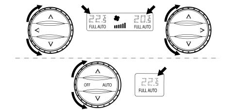
Knob to set the passenger compartment temperature (area by area).
Rotate the relevant knob for the desired area (driver/passengers) to increase (clockwise) or decrease (anticlockwise) the desired passenger compartment temperature.
Increases/decreases are in 0.5ºC steps. One complete turn of the knob is equal to 24 variation steps.
At Key-Off the temperature values set are stored and restored at the following Key-On.
The temperature range that can be set is from 16 to 32ºC. Below 16ºC the set value becomes LO while above 32ºC the set value becomes HI.
If the compressor is disabled and a user sets a temperature that is lower than the external temperature the system cannot reach or maintain that temperature. This impossibility is signalled by flashing of the set temperature.
Hi condition
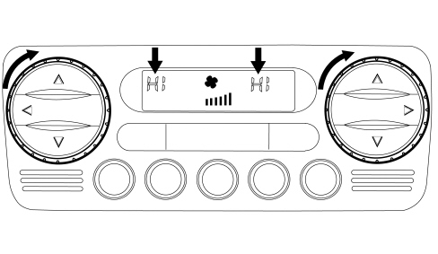
The HI condition is reached by setting a temperature above 32ºC.
This request by the user switches off the words FULL and AUTO, forces the system to MONO and involves the following actions:
- Mixer in fully hot position.
- Distribution towards the feet.
- Air flow rate increase (if the temperature of the engine is sufficiently high).
- Recirculation remains as requested by user.
Manual settings are allowed in HI conditions.
Exiting MONO conditions with the button determines the use of the HI function and sets the temperature at 32°C in both areas.
If the driver changes the temperature setting, the passenger setting is altered, outside of HI, to 32ºC.
If the passenger changes the temperature setting the driver setting will also exit HI (at 32ºC). The passenger can then only modify his own setting, having brought the system into 2/3 areas.
Lo condition
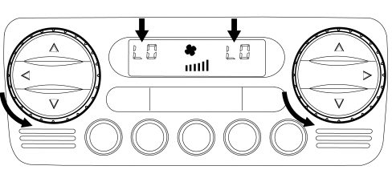
Setting a temperature lower than 16ºC puts the system in LO.
This request by the user switches off the words FULL and AUTO, forces the system to MONO and involves the following actions:
- Mixer in max. cold position.
- Air distribution to the dashboard
- Air flow rate increase
- Compressor enablement
Manual settings are allowed in LO conditions.
Exiting MONO conditions with the button determines the use of the LO function and sets the temperature at 16°C in both areas.
If the driver changes the temperature setting, the passenger setting is altered, outside of LO, to 16ºC.
If the passenger changes the temperature setting the driver setting will also exit LO (at 16ºC). The passenger can then only modify his own setting, having brought the system in Dual Zone mode.
The flashing strategy is valid if the compressor is disabled after the LO request and the recirculation is forced into automatic, if this was not already the case.
Auto button
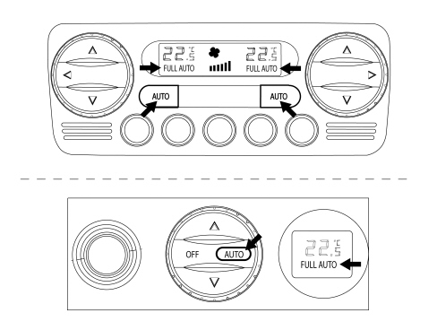
Pressing this button restores the automatic operation of the following functions
- Air distribution
- Fan speed
- Compressor
- Recirculation
When the words FULL AUTO are displayed, this indicates that all of the above functions are automatically controlled.
The word FULL goes out in the area considered when a Distribution manoeuvre is carried out manually.
The word FULL goes out in all the zones when a manual operation is carried out on the flow rate, compressor or recirculation.
The word AUTO also disappears if the control system cannot reach or maintain the required temperature (mainly when the compressor is manually disengaged).
The button that deactivates the compressor does not switch off the word AUTO if the system can maintain the required comfort.
Distribution buttons
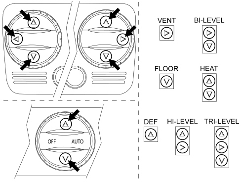
There are 7 possible positions for the air distribution (VENT, BI-LEVEL, HEAT, FLOOR, DEF, HI-LEVEL, TRI-LEVEL).
In automatic mode the system manages distribution without displaying its selection.
You can manually select one of the 7 positions by operating the relevant buttons according to the following combination strategy:
- Main Distributions:
DEF
VENT
FLOOR
- Combined Distributions
BI-LEVEL
HEAT
HI-LEVEL
TRI-LEVEL
When combined distribution is active, pressing one of the two buttons switches off the selected LED.
When main distribution is active (one LED on), pressing the same button confirms the distribution present.
Recirculation
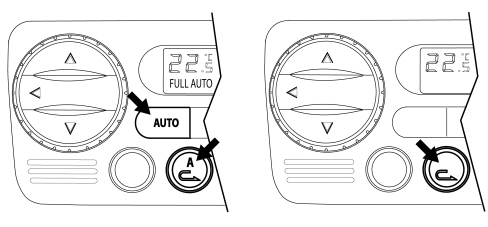
The recirculation button operates with ROLLING logic.
Pressing the AUTO button selects automatic recirculation management
- Automatic
A switches on in the button
When this button is switched on the user is informed that recirculation is being managed automatically to improve thermodynamic comfort, also according to air quality if an AQS is fitted.

|
For safety reasons (e.g. windows misted up, long periods of closure), A is switched off to signal the deactivation of the automatic control. |
When A is switched off you can select automatic functions using the rolling recirculation button, exiting the system's fully automatic setting.
- Forced recirculation off
In this type of manual operation, closure of the recirculation flap is indicated by a red LED signal.
- Forced recirculation on (external air)
In this type of manual operation, forced opening of the external air flap is indicated by a red LED signal.
|
|
This mode should be selected if the windows are misted up. |
Modulated air flow control
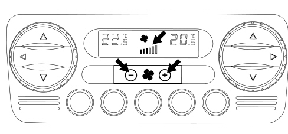
The air flow rate can be adjusted manually in steps, which are displayed as one bar for every 2 steps up to a maximum of 6 bars plus switching off.
If there have been no manual interventions, the fan speed is controlled continuously by the system and this is shown on the display by the relevant number of bars lighting up according to the flow rate.
If you intervene manually on the fan control, FULL AUTO conditions will be exited. In particular, press the rocker switch on the relevant + and - symbols to increase or decrease the fan speed.
If the control unit is automatically controlling the air flow rate at Key-On this air flow rate will be at 1 bar (minimum flow) until the car engine is started.
If the compressor is disengaged the fan can be manually controlled until it reaches 0 bars on the display.
If the compressor is enabled when the engine is running ventilation cannot be manually set below 1 bar on the display. Thus when the compressor is enabled there must be a minimum air flow rate to prevent ice from forming in the evaporator.
Switching off the control unit (off)
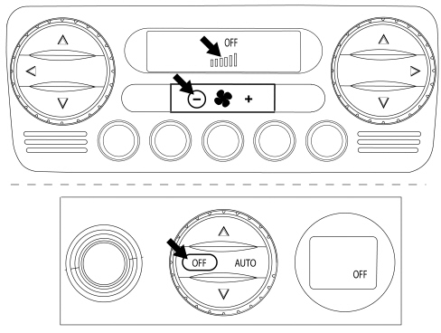
Operating the air flow rate control (decrease) below 0 bars (fan off) displays only OFF on the display.
The following actions are available in OFF:
- storing the current state
- switching off the display (with the exception of the OFF symbol)
- closed recirculation and relevant LED lit up
- compressor excluded
- fan excluded
- mixer in max cold position
- distribution in Vent
- in the OFF state the Heated Rear Window button is managed normally without activating the climate control system.
In OFF mode the recirculation has dual operation (ON/OFF) by opening (red LED off) and closing (red LED on) the flap without automatic management (red LED off).
Pressure on the + symbol or on any button of the air flow rate control (except heated rear window and recirculation) or pressure on any of the AUTO buttons switches the system back on.
When OFF mode is exited recirculation returns to automatic control.
Pressure on the OFF button on the rear control switches off the word OFF on the relevant display and stops air flow rate to the rear seats.
Compressor enablement
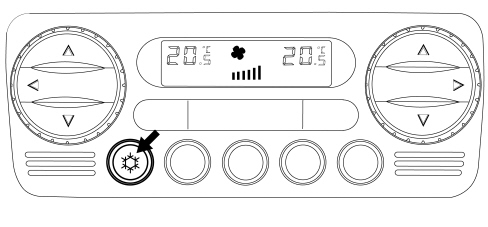
With the compressor enablement LED on, pressing the button switches the LED off and disables the compressor
Once the button has been pressed, this selection is stored for an indefinite amount of time, even after the car has stopped, as are the other manual controls.
The button has a dual function: pressing it a second time re-enables the compressor and switches on the LED.
When the compressor is disabled the system checks whether the external temperature is greater or less than/equal to that set:
- if the outside temperature is less than the temperature set then the system works normally and is capable of complying with the request even without the compressor being switched on;
- if the outside temperature is higher than the temperature set then the system is not capable of complying with the request and signals this by making the temperature settings flash.
The control (system with compressor disabled and outside temperature higher than temperature set) is activated at each Key-On.
Mono
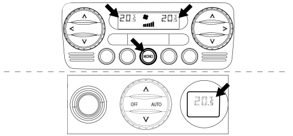
Pressure of the MONO button determines the following actions:
- the temperature set on the front and rear passenger displays is made the same as that set by the driver and the relevant LED comes on.
From this moment the system activates a single-zone control.
Pressing the MONO button again or altering the temperature set for the front and rear passengers determines the following action:
- the MONO button LED goes out and there is a shift to dual/triple zone temperature control.
Max def
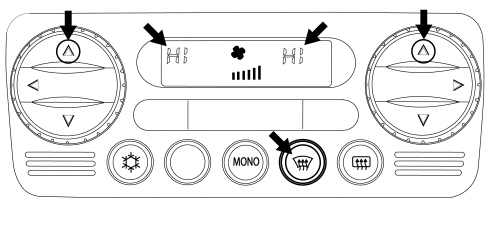
The Max-Def function is also managed with the engine off.
The operations activated are:
- Max-Def LED lit up
- storing of the function state and previous displays of Max-Def control
- words FULL and AUTO switched off and automatic recirculation (if on)
- switching on of the DEF distribution, compressor enablement, MONO and HEATED REAR WINDOW LEDs
- display of fully hot temperature (HI)
- display of the ventilation in the front display
- switching off of the rear panel
- activation of the following controls
- air flow rate increase (with coolant temperature sufficiently hot)
- air distribution in Def position (before implementing the mix)
- forced air intake open (dynamic)
- compressor function enabled
- AQS disabled (if present)
- rear window defrosting
|
|
When exiting from Max-Def the mix is implemented first and then the distribution. |
During Max-Def operation it is possible to:
- Alter the air flow rate (up/down) at will
- Deactivate the heated rear window
It is not possible to
- Alter the temperature setting (driver/passengers)
- Alter the distribution setting
It is possible to interrupt the Max-Def function by activating any one of the climate control buttons (Recirculation, Compressor, AUTO, MONO, Max-Def) implementing the return to the condition prior to the Max-Def plus the implementation of the control for the button pressed.
Heated rear window
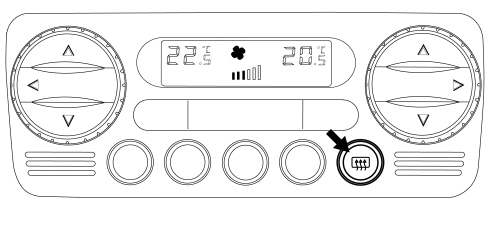
The defrosting of the rear window is activated both through the special button and through the Max-Def procedure. The display of the function status takes place through the switching on/off of the relevant LED.
The heated rear window request function depends solely on the Key-ON condition.
COMPONENTS
Air conditioning casing
The air conditioning casing, in other words the plastic structure fastened to the dashboard supporting crossmember, is different for the manual and automatic versions.
Automatic air conditioning casing
The figure below shows the automatic system components.
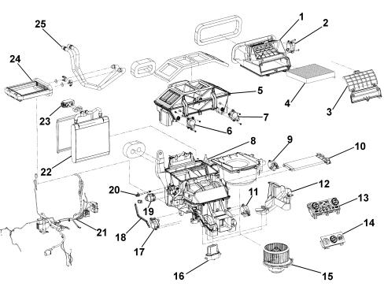
1. Air inlet assembly
2. Recirculation actuator
3. Pollen filter cover
4. Pollen filter
5. Ventilation air distribution partition
6. Left distribution actuator
7. Right distribution actuator
8. Climate control system
9. Right mixing actuator
10. Additional heater (PTC)
11. Rear distribution actuator
12. Cover
13. Main climate control system control unit (NCL)
14. Rear climate control system control unit (triple zone)
15. Fan
16. Fan speed regulator
17. Left mixing actuator
18. Rear control transmission (dual zone)
19. Rear mixing actuator (triple zone)
20. Mixed air temperature sensor
21. Wiring
22. Evaporator
23. Expansion valve
24. Heater
25. Heater pipes
Flaps
The flaps are the traditional type inside the climate control system, whilst there are new curtain partitions in the upper area of the air distribution which the actuators roll and unroll opening and closing the flow areas.
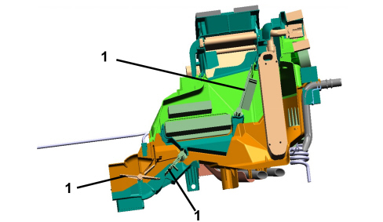
1. Traditional flaps
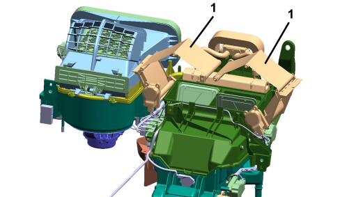
1. Curtain partitions
Actuators
There are seven actuators on the unit (6 for the dual zone version) that are managed by the electronic control unit through a BUS communication line.
|
|
Even if they are formally identical, the various actuators are not interchangeable because they are personalised by dedicated programming. They are managed individually by the Spare Parts Dpt. |
On the dual zone version the rear mixing actuator (19) is replaced by a transmission cable (18) which replicates the commands set for the driver's side for the rear seats.
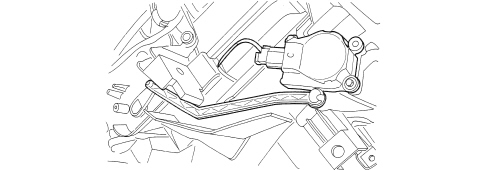
Mixed air sensor
There is a single evaporator outlet air temperature sensor housed in the air conditioning unit. Depending on the signal coming from this sensor and from the other input parameters (outside air temperature, inside air temperature, air flow rate, solar sensor, etc.) the control unit applies a dedicated algorithm based on experimental operating maps and controls the various actuators on the basis of the requests made by the users.
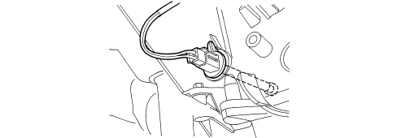
Internal air sensor
It is incorporated in the climate control system control unit and has a fan designed to prevent the build up of air inside it and make the temperature reading as consistent as possible.
Manual air conditioning casing
The diagram below shows the manual system components.
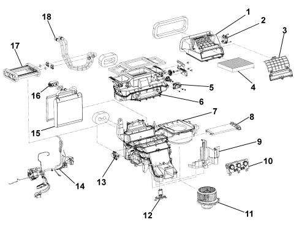
1. Air inlet assembly
2. Recirculation actuator
3. Pollen filter cover
4. Pollen filter
5. Distribution actuator
6. Upper distribution assembly
7. Climate control system
8. Additional heater (PTC)
9. Cover
10. Climate control system control unit (NCL)
11. Fan
12. Fan speed adjustment resistors
13. Mixing actuator
14. Wiring
15. Evaporator
16. Expansion valve
17. Heater
18. Heater pipes
Flaps and actuators
The flaps are the traditional type controlled by actuators with electric stepper motors.
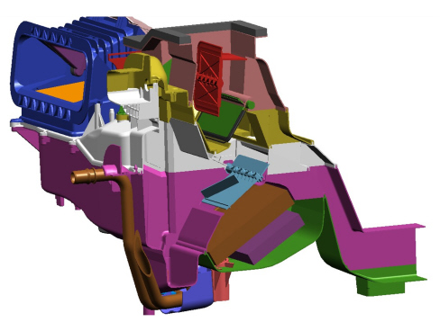
Solar sensor
The solar sensor (fitted for the automatic climate control) is located on the top part of the dashboard at the base of the windscreen.
It transforms the light signals (lux or kcal/m²h) into a corresponding linear electrical signal to supply a value proportional to the thermal energy introduced into the passenger compartment through the windscreen through the effect of the sun's rays.
It is only fitted on the automatic climate control version.
The sensor is a special type of diode (photodiode) which can alter its conduction depending on the quantity of light coming into contact with it.
If the climate control system control unit (NCL) is managing the system in AUTO mode, it uses this signal and alters the air temperature and distribution parameters to maintain the temperature requested by the user
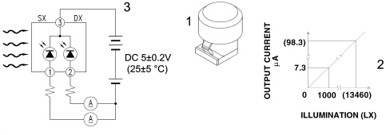
1 - Solar sensor
2 - Output lighting - current typical diagram
3 - Diagram showing operation of solar sensor
Outside air temperature sensor
This is an NTC sensor (present for the automatic climate control system) fitted on the lower part of the left exterior rear view mirror.
It supplies a signal to the electronic control unit proportional to the temperature of the outside air.
Intake air quality sensor (aqs)
The AQS sensor (available on request for the automatic climate control system) is an electronic device that is designed to supply a signal to the climate control unit when the air pollution index exceeds a preset dangerous level. The control unit manages the automatic recirculation function to prevent the introduction of polluted air into the passenger compartment. The sensitive element of the sensor is capable of detecting the presence of oxidising particles (e.g. CO) or reducing particles (e.g. NOx) in the flow or air entering the vehicle.
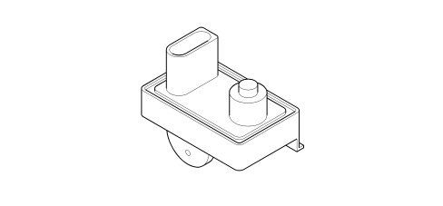
Misting sensor (fog sensor)
This sensor (available on request for the automatic climate control system) is housed in the area of the interior rear view mirror with the sensitive element facing the interior surface of the windscreen. An electronically managed optical system makes it possible to detect the degree of misting of the windscreen and provides a series of signals for the control unit depending on the pre-set intervention levels.
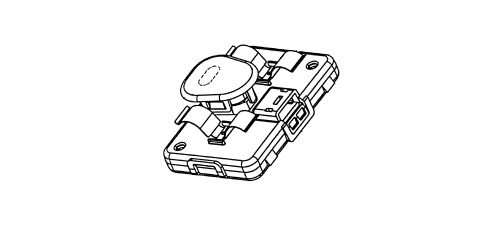
The signal is represented by a set of impulses with a Duty Cycle varying between 10% and 90%.
|
|
The misting sensor is enabled at every key-on and therefore if the windscreen is (even partly) misted up the climate control is automatically activated even if it is turned OFF. When the automatic climate control system control unit is turned on the sensor can be disabled by one of several manual methods. |
Expansion valve
The tasks of this valve are to:
- Separate the high pressure circuit from the low pressure circuit;
- Expand the refrigerant (change in state from liquid to gas);
- Regulate the evaporation process (flow rate);
- Regulate the evaporation temperature;
- Protect the compressor from refrigerant fluid.
The thermostatic expansion valve is fitted on the evaporator inlet and outlet ducts with the task of regulating the flow and expansion (drop in pressure) of the R134a fluid before entry into the evaporator.
The automatic regulation of the size of the passage for the gas inside the expansion valve is produced by a sensitive bulb which measures the temperature of the refrigerant fluid and depending on this suitably adjusts the size of the opening that the gas passes through by means of a special spring that moves a shutter determining the extent of the expansion.
The increase in temperature at the evaporator outlet, detected by the bulb, ensures that the valve is opened with a consequent increase in the flow rate of the fluid in the evaporator.
Conversely, low temperatures involve a reduction in the size of the gas port, determining a decrease in the flow of gas.
The expansion valve is directly accessible from the engine compartment.
Linear pressure switch
The linear pressure switch makes sure the system is working properly. By continuously analysing the pressure of the climate control system circuit, the sensor provides the engine management control unit, in real time, with the variations in pressure making the management of the activation levels more flexible.
For each variation in pressure there is a corresponding voltage signal used by the engine management control unit to activate the fan speed and turn the compressor off if the pressure goes above or below the permitted limits (safety function).
The operating range of the linear sensor goes from 3.018 bar up to 29.508 bar according to the following pressure (bar) / output voltage percentage (%Vcc) curve.
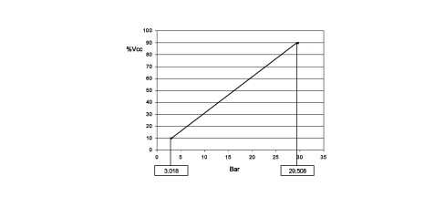
The enablement for the activation of the compressor and the adjustment of the fan speed, depending on the variation in pressure, takes place in this pressure range; the compressor is deactivated above and below these values for safety reasons, to prevent damage to the system.
The pin out for the sensor is illustrated in the diagram below.
|
|
The supply voltage can vary by ±10% and the temperature of the sensor is between -5°C and 80°C. |
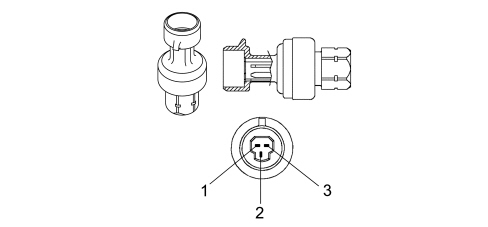
1- Earth
2 - Supply voltage
3 - Output signal
Externally-controlled compressor
(envisaged for 2.0 jtdm, 136 hp engines)
The compressor has a special externally-adjusted component and makes it possible to alter the temperature downstream of the evaporator and, if the thermal conditions allow, to reduce the post-heating.
As a matter of fact, in conventional systems, when an intermediate air temperature is requested, the air cooled by the climate control unit must be heated, wasting a part of the energy used for cooling.
The compressor external control changes the temperature downstream of the evaporator, thereby reducing post-heating.
This allows fairly good energy saving when an intermediate temperature is required at the vents.
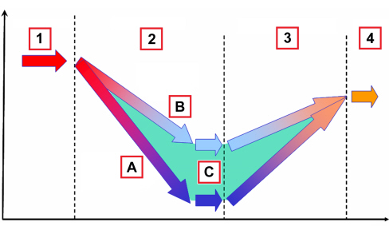
1 - Outside air
2 - Cooling
3 - Post-heating
4 - Outlet to the vents
A - Conventional system
B - External control
C - Energy saving
Using the mechanical energy from the engine via the electromagnetic clutch and pulley, this machine allows the circulation of the refrigerant in the circuit varying the pressure level.
Features of the variable displacement compressor
The car comes with a VALEO ZEXEL DSC17EC compressor
|
Maximum capacity |
171 cc/rev |
|
Minimum capacity |
7 cc/rev |
|
Number of cylinders |
7 |
|
Number of maximum continuous revs |
8000 rpm |
|
Number of maximum non continuous revs |
8500 rpm |
|
Direction of rotation |
Clockwise |
|
Oil type and quantity |
ZXL100 PG-150 cc |
The capacity of these types of compressors may increase or decrease depending on variations in load requested by the system, changing exterior conditions such as temperature and/or humidity and sharp variations in engine load conditions.
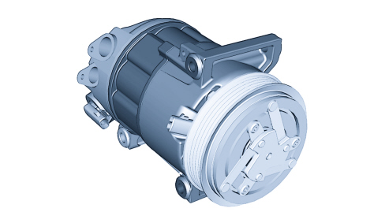
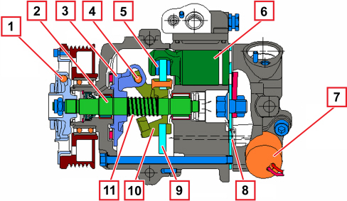
1 - Mechanical torque limiter
2 - Main shaft
3 - Rotor
4 - Pin
5 - Thrust bearing
6 - Piston
7 - External control actuator
8 - Orifice
9 - Connecting rod carrier plate
10 - Cam
11 - Spring
Traditional compressor
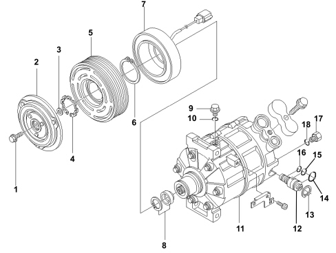
1. Screw
2. Guide plate
3. Thickness
4. Circlip
5. Pulley assembly
6. Circlip
7. Electromagnetic coupling
8. Shaft sealing assembly
9. Oil drain plug
10. O-ring
11. Compressor
12. Control valve
13. Seal ring
14. O-ring
15. O-ring
16. O-ring
17. Pressure relief valve
18. O-ring
The compressor is the oscillating disc type.
With this type of compressor the cylinders and pistons are arranged axially along the crankshaft. The pistons work inside the cylinders and are controlled by an oscillating disc to produce the intake, compression and exhaust strokes. In variable capacity compressors, with oscillating discs, the angle of the oscillating disc is altered to change the stroke of the piston and the capacity.
Oscillating disc
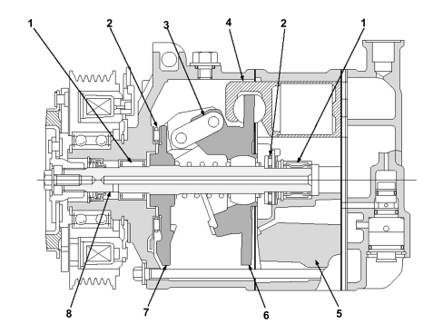
The crankshaft (8), which is operated by the engine by means of an electromagnet coupling, is equipped with a thrust flange (7) and is connected by a joint (3) to the oscillating plate (6).
The crankshaft is supported by two radial bearings (1) and two thrust bearings (2). The oscillating plate is controlled with an alternating motion by the rotation of the crankshaft and operated by the alternating motion of the pistons (4).
Movement of the pistons
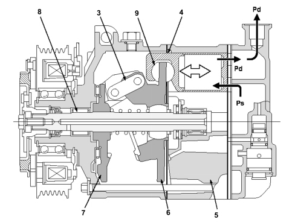
Pd: Exhaust pressure
Ps: Intake pressure
The pistons in the cylinders are connected to the oscillating disc by two pads (9). The rotation of the thrust flange (7) is transformed into the alternating motion of the oscillating disc (6) and the pistons (4).
The cylinder block (5) has seven cylinders evenly arranged around the crankshaft. The pistons work inside the cylinders and produce the intake and compression strokes.
Control of the stroke
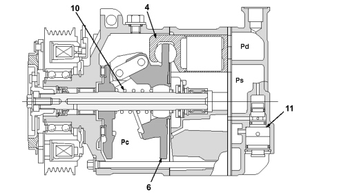
Pd: Exhaust pressure
Ps: Intake pressure
Pc: Internal chamber pressure
The check valve (11) on the cylinder head controls the flow of gas in the internal chamber depending on the intake pressure (Ps) and the exhaust pressure (Pd) which represent the thermal load.
A reaction spring (10) is housed at the front of the oscillating disc.
The force of the spring, the thrust of the gas on the piston crown and the thrust of the internal chamber (Pc) on the rear surface of the piston produce a torque that controls the angle of the oscillating disc (6) and vary the stroke of the piston (4).
Operation
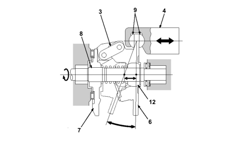
The thrust flange (7) on the crankshaft (8) and the variable angle oscillating disc (6) are connected by a joint (3).
The joint acts as a fulcrum and the angle of the oscillating disc is altered by the ball joint (12) on the oscillating disc that moves along the crankshaft.
The rotation of the oscillating disc (6) is converted into an alternating motion by the movement of the ball joint (12). The piston (4) is fitted on the oscillating disc by means of two pads (9). The stroke of the piston is altered according to the angle of the oscillating disc to produce the variation in the cylinder capacity.
Condenser with integrated drier filter
The condenser is a heat exchanger located in front of the engine coolant radiator.
Its task is to condense the refrigerant fluid, in other words transform it from a gaseous state to a liquid state.
The refrigerant fluid in a gaseous state passes through the condenser pipes and liquifies, on average, at a temperature of 60°C.
The air comes into contact with the condenser. When the vehicle is stationary or driving in a traffic queue, the flow of air is produced by the engine radiator fan.
If the heat exchanger in the condenser is insufficient, this increases the pressure in the system and causes the incomplete condensation of the fluid, reducing the efficiency of the system.
There is a housing on the left side of the condenser for the drier filter. This allows the layout of the system to be improved.
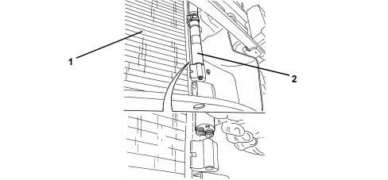
1. Condenser
2. Built-in drier filter
Fan
In the manual system the fan is activated by the passenger compartment air speed selector, which sends the signal to a resistive divider which produces the different speeds. The resistive divider is fitted in the duct between the dynamic air intake and the unit to cool it.
In the automatic system the fan is operated by dedicated buttons in the control panel which send the signal to the Climate Control Node which produces different voltage values for the different speeds.
Pollen filter
The pollen filter is designed to filter the outside air entering the passenger compartment.
It is located inside the air conditioning casing and can be replaced by removing the oddments compartment in the passenger's compartment.
The filter is fitted on both the manual version and the automatic version of the climate control system.